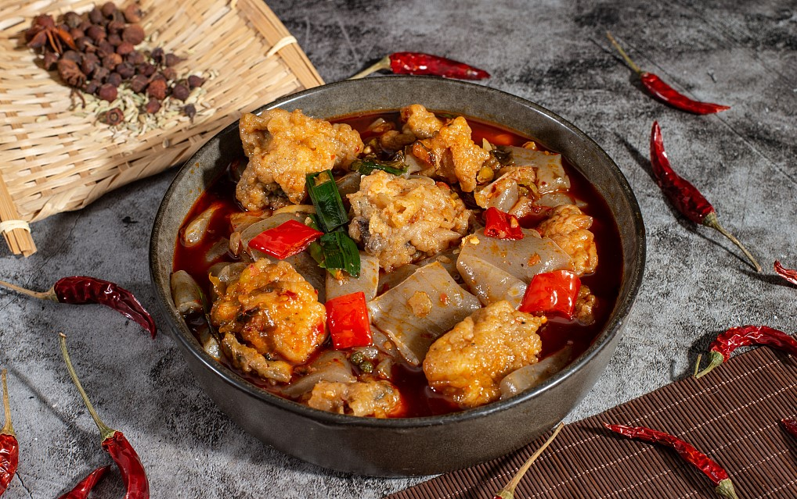
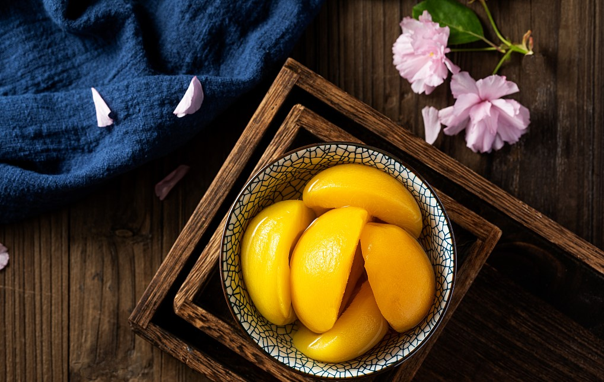
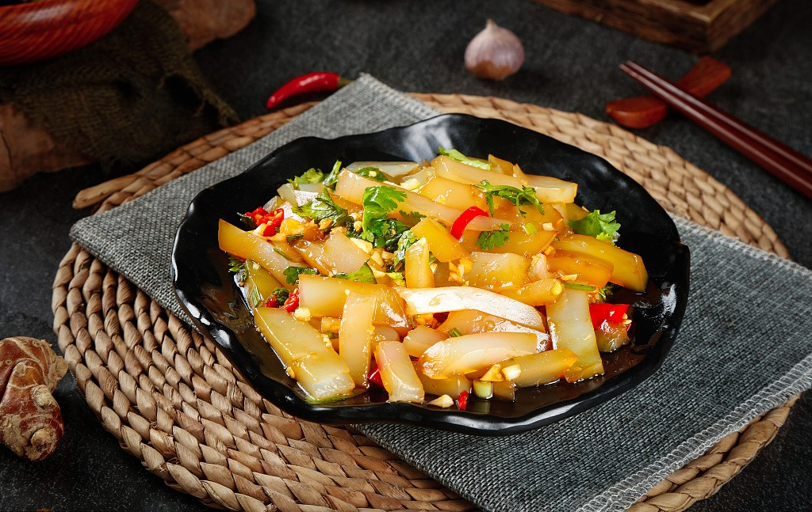

潼南是著名的油菜之乡，种植油菜有着悠久的历史。从陈老祖的香油点灯到万家百姓的饮食安康，千百年来，潼南油菜之花都以其磅礴之势、倾国倾城之美与百花争奇斗艳，为大地平添金色之美！潼南菜花节至今已成功举办第七届，潼南菜花节以它独特魅力吸引着五湖四海的游客。
潼南县崇龛镇是五代宋初、道教至尊陈抟老祖的故里，油菜花节突出发掘陈抟文化治国之略和养生之道的精髓。同时，潼南是西部的绿色菜都，蔬菜种植面积和产量均居全国县域级第二，而3万亩油菜基地展现出的“七彩花海，流金大地”呈现的又是一个金色潼南。
中国是世界第三大柠檬种植国家。重庆潼南是中国柠檬三大主产区之一，潼南被誉为“柠檬之都”。 潼南地处北纬30度，属亚热带湿润季风气候区，气候温和，雨量充沛，日照充足，年均气温17℃，且具有偏酸性的土壤和便利的灌溉条件，孕育了适合柠檬生长的最佳环境。潼南柠檬种植历史悠久，可追溯到上个世纪70年代。
潼南的“尤力克”柠檬，一年四季开花，果色鲜艳，出油量高，汁多肉脆，香气浓郁。果实中含蛋白质、脂肪、碳水化合物、钠、钙、维生素B2、烟酸、膳食纤维等多种营养成分，特别是维生素C的含量更高。
提起重庆市潼南县太安镇的鱼，在巴蜀食文化中颇有几分名望。据《潼南县志·物产篇》记载“鳊鱼，即唐诗‘缩项’鳊。产县太安镇瓦漩沱。腹如越斧，色青黑，味鲜美，实为他处罕见。”《舆地记胜》载：“‘孟蜀时，常取鱼于禁溪’。据传所取即此”。故世人又称太安鳊鱼为贡鱼，称瓦漩沱为禁溪。聪明的太安人便以此鳊鱼为优势，创造出一套独特的烹调技艺，制成了早已闻名川中的“太安鳊鱼”，这也就是今日“太安鱼”的前身了。
潼南是全国两大黄桃生产基地之一。县内有定植黄桃树约 521万株，结果树 100多万株，年产量8000吨。潼南黄桃分早、中、晚熟三季，具有产量高、味道正、个头大、色泽鲜、营养丰富的特点，可与美国的王牌品种――“台尔蒙”媲美。潼南罐头厂生产的糖水黄桃罐头，其数量和质量均居全国桃类罐头前茅。它保持了鲜桃的风味和营养，固形物含量高，颜色金黄，质韧肉细，味道芳香，不易浑汤，而且耐贮运。
麻辣鲜香，柔软糍糯，色泽鲜亮，营养丰富，陈凉粉的味道真的棒极了。 2004年10月，一个特大喜讯传回潼南，在中国美食节暨首届重庆国际火锅文化节上，潼南名小吃陈凉粉荣获“消费者最喜爱的特色小吃”称号。在这个文化节上，陈凉粉的传人陈中贵，真是名利双收，他制作的陈凉粉大出风头，获得5位国家级专家一致好评，获得消费者特别青睐，10天的销售额达到10万多元。
